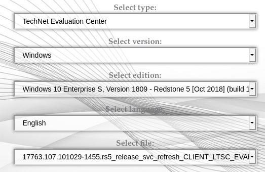
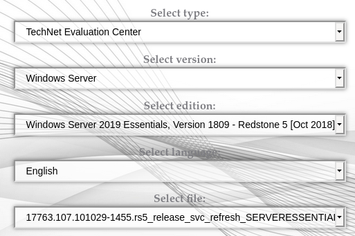
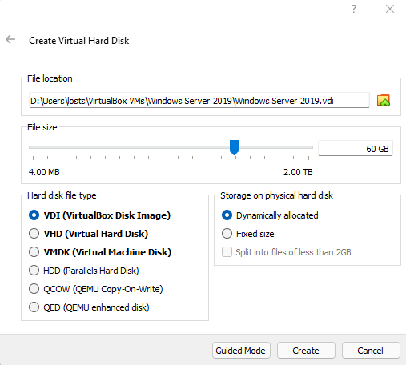
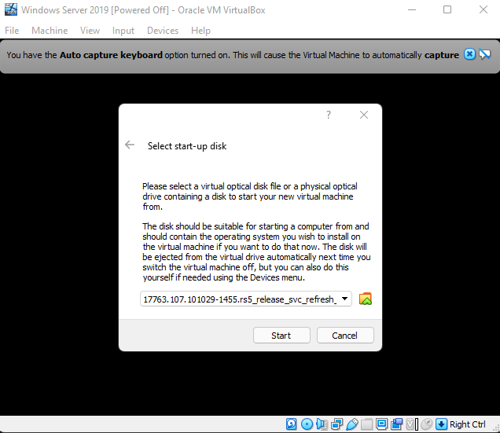
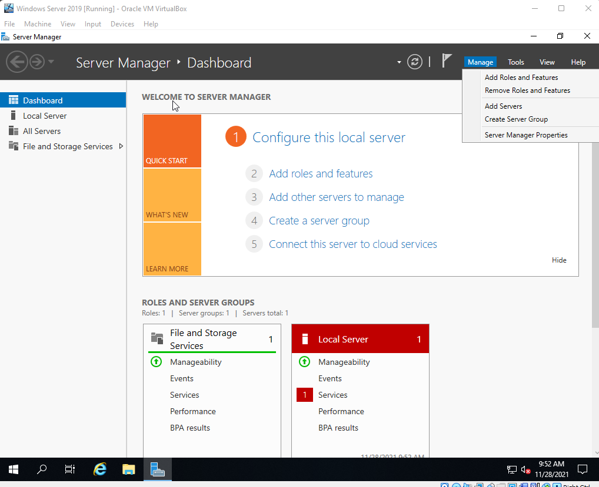
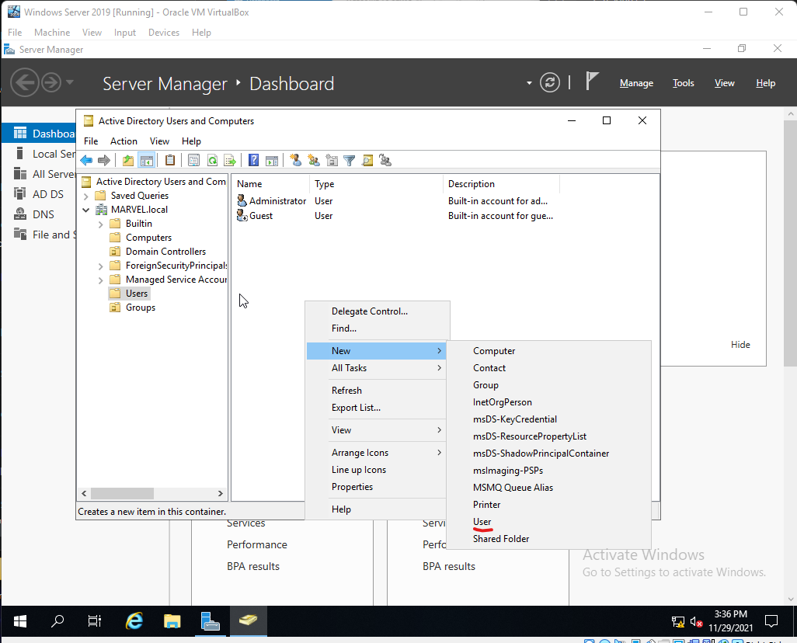
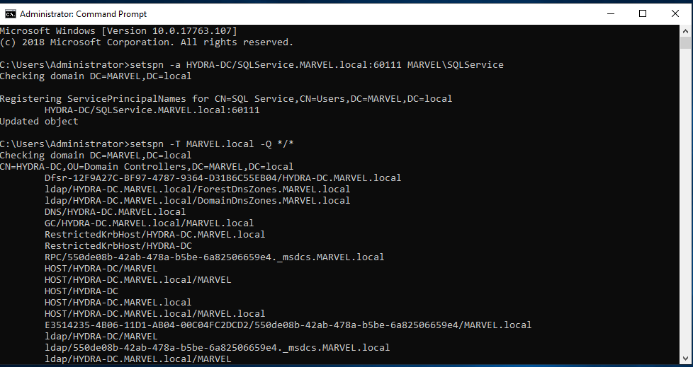
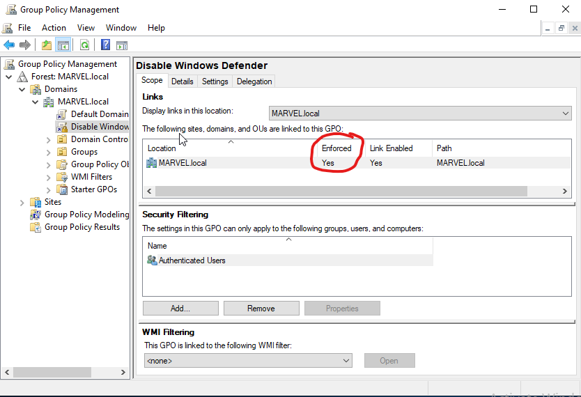

Crystal Mercier
November 26, 2021
Setting up an Active Directory Lab
Firstly, I want to give credit to Heath Adams at TCM Security. The Practical Ethical Hacking course helped me learn more than any book and the hands on learning was just what I needed!
The Lab
- 1 Windows Server 2019
- 2 Windows 10 Enterprise
Requirements
- 60 GB Disk Space
- 16 GB RAM
Downloading the Necessary ISOs
If you are able to get the ISOs from Microsoft Evaluation Center please feel free to do so. You can find it with Google search as it should be the first option that appears.
I however, did not have any luck getting ISOs to finish downloading from here as they would always fail after a short bit. So I used https://tb.rg-adguard.net/public.php instead. As the ISOs on this site are legit and sourced directly from the MS servers.
For Windows 10 Enterprise: 
For Windows Server 2019: 
Setting Up the Domain Controllers
I will be using Oracle VM VirtualBox for this out of personal preference but feel free to use whatever you are comfortable with or step out of your comfort zone and learn something new!
Firstly, well setup the Windows Server 2019. Click Machine and New and give your virtual machine a name. Set the machine folder to a location of your choosing, making sure you have the required space on that drive. Set the type to Windows and version to Windows 2019 (64-bit). I left the memory size at the minimum 2GB but feel free to bump it up if you’d like and have the RAM to do so.
In the next window you will be creating the virtual hard disk. Set this to 60GB and leave it to dynamically allocated then click create.

Right click the newly created VM and click on settings. Go to System and uncheck Floppy.
Then go to Storage and select the Empty CD storage. On the right side there is a disc icon, click it and select choose a disk file and choose your server ISO. If you aren’t sure which ISO is which. The server ISO file will have SERVERESSENTIALS in the name.
Leave the Network set to NAT and click ok. Go ahead and start the machine. It asked me to select the start-up disk so I changed that from the default GuestAdditons.iso to the Windows Server ISO and click start.

Select your language information and click Next.
Then click Install Now.
Select I don't have a licence key and Next. Accept the license terms and click Next again. Select the Custom: Install Windows only (advanced).
On the Where do you want to install Windows window select New and Apply then click Next and wait for the install to finish.
When it finishes it asks you to set a password for the Administrator account. I set mine to P@$$w0rd! but as this is your own virtual environment you can set it to whatever you wish as long as you remember it! Click finish to finally get to the Windows login. It asks you to press ctrl+alt+delete to unlock. To do this on VirtualBox go to Input then Keyboard and select Insert Ctrl+Alt+Del.
If you are using VMWare you may have to setup VMWare Tools here to get a properly sized screen. The thing I love about VirtualBox is that I can just select the display size within the running machine settings and VirtualBox resizes properly without the need to install Tools usually.
Next click Start and type in Computer. Select where it says View your PC name. Here you want to scroll down and select Rename this PC and name it whatever you want and restart.
After you log back into Windows the Server Manager should open. If it does not go ahead and start it up. Next you’ll want to go to Manage and Add Roles and Features.

Select Next here. Keep it at the default Role-based or feature-based installation and click Next. Select Next again. On Server Roles you want to select Active Directory Domain Services, click Add Features and select Next. Select Next again. Select Next again and then Install.
Now a flag will appear at the top and selecting it will alert us to the fact that we now have to Promote this server to a domain controller. So go ahead and select that now.
Select Add a new forest and give it a Root domain name of your choosing and select Next. Give it a password and click Next. Click Next till you get to the option to Install and select it.
Setting Up the User Machines
For this part you will want to repeat the entire process at least once so that you have at least two client machines. Just like before if you are using VirtualBox go to Machine and New and set it like below the select Create.
Again change the size to 60GB and the other settings can stay at their defaults then click Create. Right click and select Settings then System and uncheck that floppy from the boot order. Then select Storage then Empty and the disc icon to Choose a disk file. Select the CLIENT ISO file this time and click OK.
Start the machine and select the CLIENT ISO file again if prompted to select a start-up disk. Check that the language settings are how you want them and select Next then Install Now. Check the box to accept the terms and click Next. Select Custom: Install Windows only (advanced), this brings you to a new window to choose where you want to install Windows. Click New and Apply then Next after its done making the partitions.
After it restarts you will need to select a region and keyboard layout. Once you get the option to sign in you’ll want to click Domain join instead.
Give it a name and click Next. Give it a password, here I just used P@$$w0rd1 to make it easier to remember, then click Next. Fill out the security questions with whatever you wish and click Next. Click No at this next screen. Change everything to No if you like on the privacy settings page and then click Accept.
Again you may have to install Tools if you are using VMWare. After it finishes loading the Windows desktop you will want to click Start and search computer then select View your PC name. Scroll down to Rename this PC and give it a name of your choosing and reboot.
Do this all again for at least one more Windows 10 client before moving onto the next section.
Setting Up Users, Groups, and Policies
Start up your domain controller machine and login. Open up the Server Manager if it does not start automatically. Next select Tools from the menu on the right side and Active Directory Users and Computers from that drop down menu.
Expand the domain controller list and you will see the default directories Builtin, Computers, Domain Controllers, ForeignSecurityPrincipals, Managed Service Accounts, and Users.
The next step is optional and is more of a quality of life step:
- We want to create a new one for groups so right click the domain controller and select
NewandOrganizational Unitand name itGroupsthen clickOK. The click onUsersand move everything that has theTypeasSecurity Group - *to the newly createdGroupsfolder.
Now we will want to add the users from our client machines into the Users directory. To do this you will want to click anywhere on the right in the empty space under Administrator and Guest then hover over New and select User.

Add the user logins you made for the clients here for the First name and Last name fields and come up with a naming convention that will be consistent for the User Login name field, ie. first initial and last name.
Click Next and give the user a password. Note you can set the password to never expire in this virtual test environment but its not something you would realistically want to do. Repeat for however many users you wish to add.For one of the users be sure to make a copy of the Administrator user to easily create a user that will be the domain administrator.
If you are building this lab for testing purposes you may choose to create a copy of the domain administrator account and make it a SQL Service account. Just set the First Name as SQL and Last as Service and the login name as SQLService. Then right click the SQL Service user and give it a description that tells the password and click Apply and figure out how you can view that description without being a domain administrator as descriptions often contain valuable information.
Next lets set up a file share. Close this window and select File and Storage Services under Server Manager.
Click on Shares and at the top right where it says TASKS click there and then New Share.

Leave it at the default SMB Share - Quick and click Next. Click Next again and now give it a Share name and click Next until you get the option to Create. Select Create then close once it finishes. Most domain controllers have shares so doing this opens the ports and gives us another attack vector to play around with.
Next we want to create a service principal name(SPN) so we can play around with Kerberoasting attack so we need to open a command prompt as Administrator. Enter the following on command prompt:
setspn -a DOMAINCONTROLLERPCNAME/SQLService.FORESTNAME:60111 FORESTNAME\SQLService
Then:
setspn -T FORESTNAME -Q */*

As this is a testing environment we will want to make things easier and disable Windows Defender for now. Click start then type in Group Policy Management until it pops up then right click it and select run as Administrator.
Expand the Forest and Domains then right click the domain and select Create a GPO in this domain, and Link it here...
Name it Disable Windows Defender and click OK. Now expand this tree so you see the newly created Disable Windows Defender then right click it and select Edit. Next Expand Policies, then Administrative Templates, then Windows Components and finally click Windows Defender Antivirus. Double click on Turn off Windows Defender Antivirus and select Enabled then Apply and OK.
By default the Enforced is set to No. Right click this and select Enforced to change this to Yes.

Joining Our Machines to the Domain
Start up one of the Windows 10 Clients and login. Open up File Explorer and navigate to the C: drive. Create a new directory here called Share.
Right click the newly created Share directory and select Properties. Click the Sharing tab and the click Share. Click Share in the window that pops up and select Yes, turn on network discovery and file sharing for all public networks then Done.
Close that out and go back to your domain controller virtual machine. Open up the Command Prompt and type ipconfig to get the IP of the domain controller. Once you have the IP switch back to the Windows 10 client and right click the Network icon at the bottom right then select Open Network and Internet Settings. Select Change adapter options and there should be a single Ethernet here. Right click it and select Properties then double click on the Internet Protocol Version 4(TCP/IPv4). Leave the IP address to obtain automatically but switch Obtain DNS server address automatically to Use the following DNS server addresses and set the Preferred DNS server to that domain controller IP you just looked up with ipconfig then click OK on this window and the next.
Next click start and type domain and you should see the option Access work or school. Select it and click Connect then at the bottom you want to click Join this device to a local Active Directory domain.
Enter the domain name you chose here.
Note
- If you are using VirtualBox like me this is where you discover that leaving the
virtual machines setting to
NATgives them all the same IP. So you must open VirtualBox and selectFile, thenPreferences, thenNetworkand click the button to add a new NAT network.
- Then right click each of your machines and go to
SettingsthenNetworkand change theNATtoNAT Network. The name field should update to the newly created NAT network but change it if it does not and clickOK.
Next it asks for a user name and password. Type Administrator for the user name and whatever password you set for that account at the start. Click Skip at the next window and then Restart Now.
After it boots back up to the login select Other user and enter the user information you setup on the domain controller using the first name initial and last name scheme and make sure its successful.
Sign out then sign in as the user administrator DOMAIN\administrator. As we want to set the user to be an administrator on the local machine. Right click on start and select Computer Management. Click Local Users and Groups then double click Groups. Double click Administrators and then Add and type the user name into Enter the object names to select and make sure to click Check Names before hitting ok to make sure it found the user. Click Apply and OK.
Do the same for your other Windows 10 client machines. Making sure that the local user is an administrator of that machine and that your main user is an admin on all machines.
Lastly go back to your Windows Server 2019 machine and open Active Directory Users and Computers and select Computers. You may have to click refresh but the Windows 10 client computers should all appear here now.
Congratulations! Your own active directory lab is fully set up. Time to get hacking!